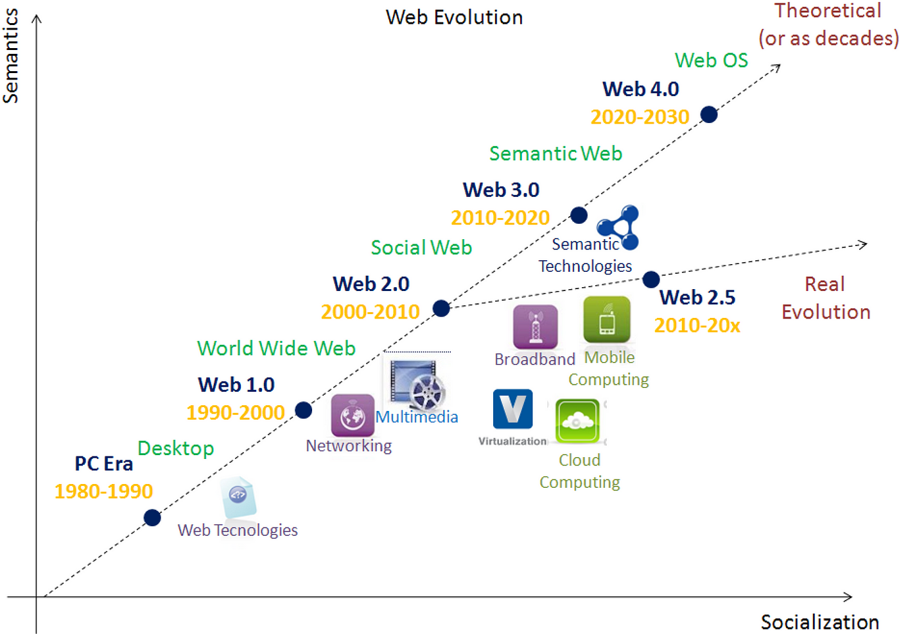
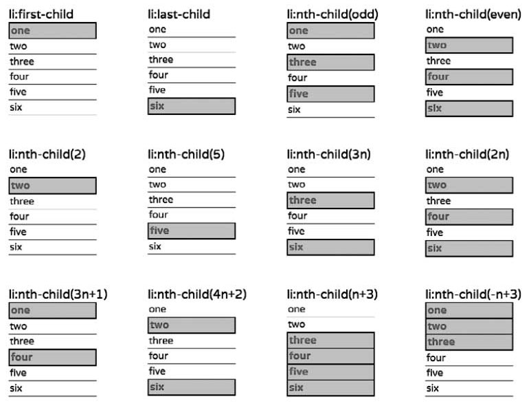
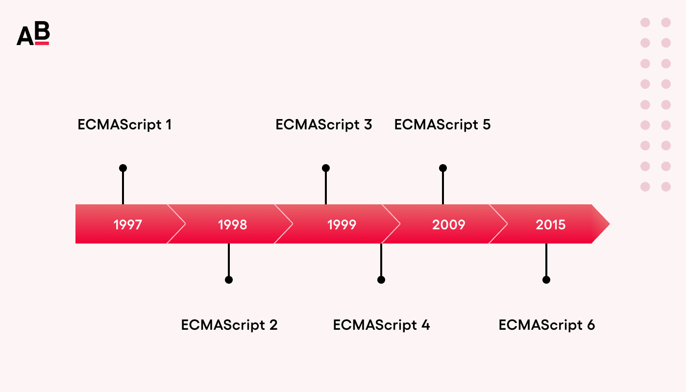
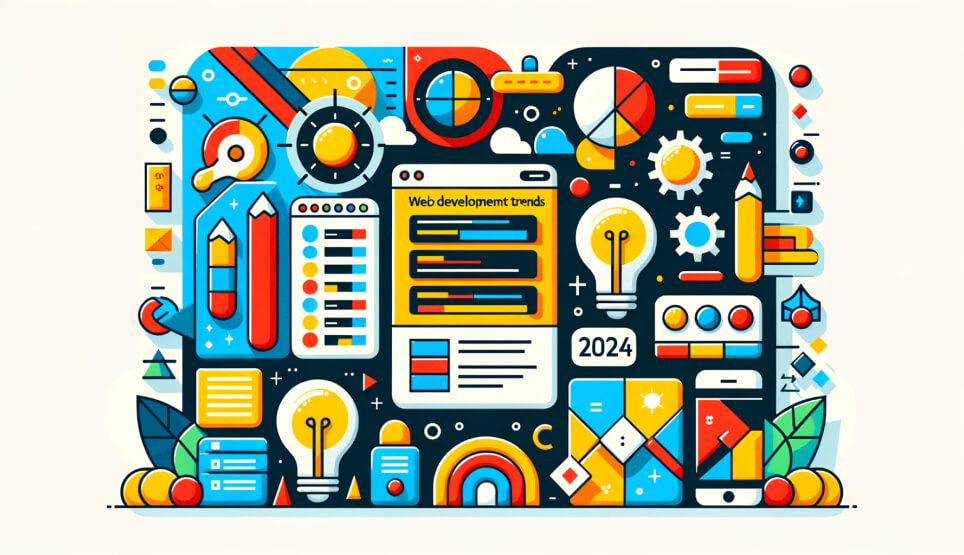

Веб-розробка — це мистецтво та наука створення веб-сайтів та веб-додатків. У сучасному цифровому світі веб-розробка стала однією з найважливіших галузей інформаційних технологій.
Веб-розробка включає в себе три основні технології: HTML для структури, CSS для стилізації та JavaScript для інтерактивності. Ці технології працюють разом, щоб створити функціональні та привабливі веб-сайти.
"Веб — це не просто технологія, це спосіб з'єднання людей та ідей по всьому світу." — Тім Бернерс-Лі, винахідник Всесвітньої павутини
Історія веб-розробки розпочалася в 1990 році, коли Тім Бернерс-Лі створив перший веб-браузер та веб-сервер. З тих пір технології швидко розвивалися, і сьогодні ми маємо прості статичні сторінки складні інтерактивні додатки.

Рис. 1. Часова лінія розвитку веб-технологій з 1990 по 2024 рік
Основні напрямки веб-розробки
Веб-розробка поділяється на кілька основних напрямків:
Frontend розробка — створення користувацького інтерфейсу
Backend розробка — серверна логіка та бази даних
Full-stack розробка — поєднання frontend та backend
CSS — це мова стилів, яка відповідає за зовнішній вигляд веб-сторінок. CSS дозволяє розділити контент від презентації.
CSS працює за принципом каскадності, що означає, що стилі можуть успадковуватися та перевизначатися. Це дає розробникам гнучкість та контроль над дизайном сторінки.
3.1. Селектори CSS
Селектори — це спосіб вибрати елементи на сторінці для застосування стилів. Існує багато типів селекторів, кожен з яких має свою специфіку.

Рис. 3. Основні типи CSS селекторів та їх застосування
CSS має сотні властивостей для контролю зовнішнього вигляду елементів. Найважливіші категорії включають текст, кольори, розміри, позиціонування та анімації.
Порада: Почніть з основних властивостей: color, background-color, font-size, margin, padding, border.
JavaScript — це мова програмування, яка додає інтерактивність веб-сторінкам. Це єдина мова програмування, яка нативно підтримується всіма браузерами.
Спочатку JavaScript використовувався лише для простих інтерактивних елементів, але сьогодні це повноцінна мова програмування, яка може виконувати складні завдання як у браузері, так і на сервері.

Рис. 4. Розвиток JavaScript від простих скриптів до сучасних фреймворків
Основні можливості JavaScript:
Маніпуляція DOM елементами
Обробка подій користувача
Асинхронні запити до сервера (AJAX)
Валідація форм
Анімації та ефекти
"JavaScript — це мова, яка дозволяє веб-сторінкам оживати та взаємодіяти з користувачами у реальному часі."
Сучасні фреймворки та бібліотеки:
Сьогодні розробники використовують потужні інструменти: React, Vue.js, Angular, jQuery. Ці фреймворки значно спрощують розробку складних додатків.
Дотримання найкращих практик допомагає створювати якісні, підтримувані та доступні веб-сайти.
Основні принципи:
Семантична розмітка — використання правильних HTML елементів
Доступність — підтримка користувачів з обмеженими можливостями
Продуктивність — оптимізація швидкості завантаження
SEO — оптимізація для пошукових систем
Веб-доступність означає, що сайт може використовувати кожен користувач, незалежно від його фізичних можливостей. Це включає підтримку скрін-рідерів, клавіатурної навігації та контрастних кольорів.
Веб-розробка — це захопливий та динамічний напрямок, який постійно розвивається. Освоївши основи HTML, CSS та JavaScript, ви заклали міцний фундамент для подальшого розвитку у цій галузі.
"Найкращий спосіб вивчити веб-розробку — це практикуватися, експериментувати та не боятися робити помилки."

Подальші кроки:
Вивчення сучасних фреймворків
Освоєння серверних технологій
Робота з базами даних
Практика на реальних проектах
Пам'ятайте: веб-розробка — це не тільки технічні навички, але й творчість, логічне мислення та увага до деталей.